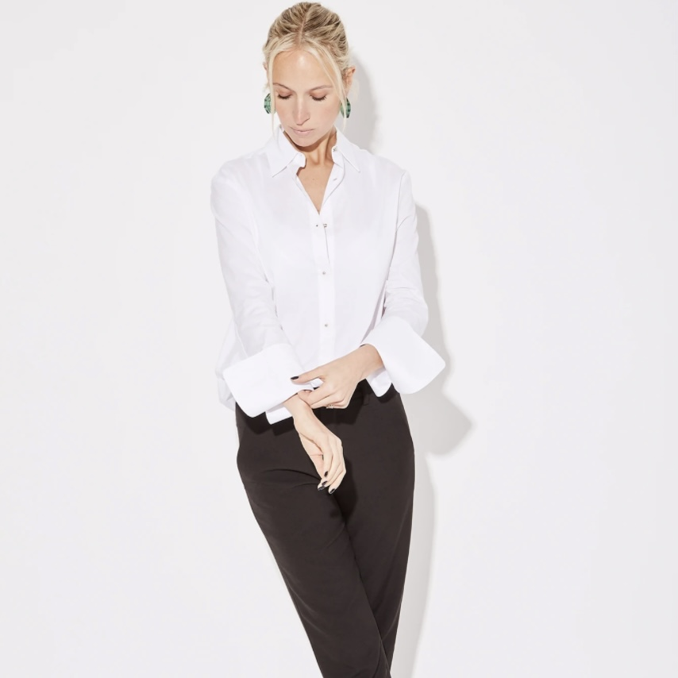
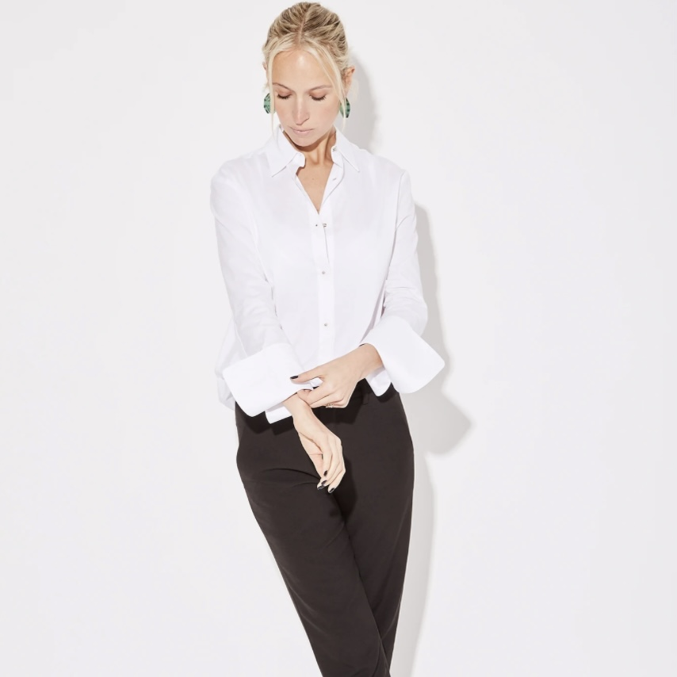

Misha Nonoo
Design Intern
Photoshoot Assistant
Misha Nonoo is a chic, sustainable fashion line for women on the go, founded by fashion designer Misha Nonoo, with a league of devoted fans including Meghan Markle, Bella Hadid and Amal Clooney. While studying in New York City at Parsons School of Design, I worked as an intern for the brand, assisting with fashion shoots and promotional events. Collaborating closely with the Design and Marketing teams, I developed social media content, scouted locations for shoots, created mood boards and assisted with casting talent.
 
